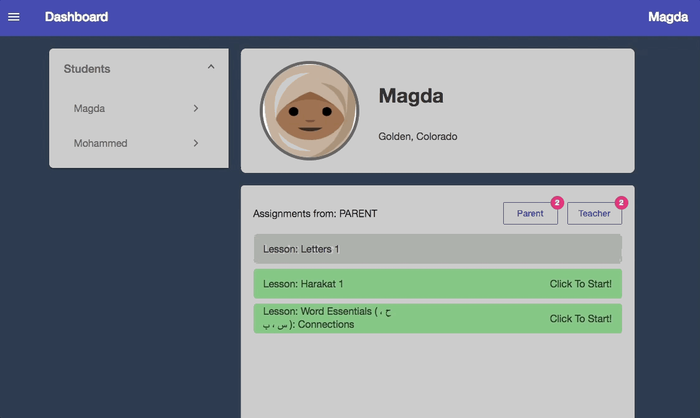

Getting Started Guide For Muslim Communities
Arabicly is a website available anytime, anywhere for both students and teachers to learn and teach Arabic. Our goal is to make learning Arabic a fun game like experience for all to enjoy. To help on your learning journey, we've created the following guide to help ensure your success.
1. Save Arabicly
We are actively enhancing our website and mobile experience (offline mode, faster load time, etc) to take advantage of these features follow the instructions below for your system
Computer Users
Bookmark Arabicly at https://arabicly.io with the Chrome, Firefox, or Safari web browser ONLY.
Android Users
For Android user, use the Chrome web browser ONLY to add Arabicly to your homescreen.

iOS Users
For iOS users, use the Safari web browser ONLY to add Arabicly to your homescreen.

2. Login To Arabicly
All student accounts are tied to a parent's email address. Login in with the credentials provide by your organization.

3. Select Student Profile
There can be multiple students under a parent's account. Therefore, first select the profile of the student that will begin completing assignments or practising a lesson. This can be completed through the dashboard view.

4. Review Assignments
Once a student is select, you can view their assignments through the dashboard. Homework can be assigned by either a teacher or parent. Assignments in grey have already been completed while assignments in green have yet to be completed. Clicking on a green assignment will take the student directly to that exercise.

The Arabicly team is here to help you on your learning journey. If you have an feedback or suggestions feel free to reach out to us at info@ummatna.com